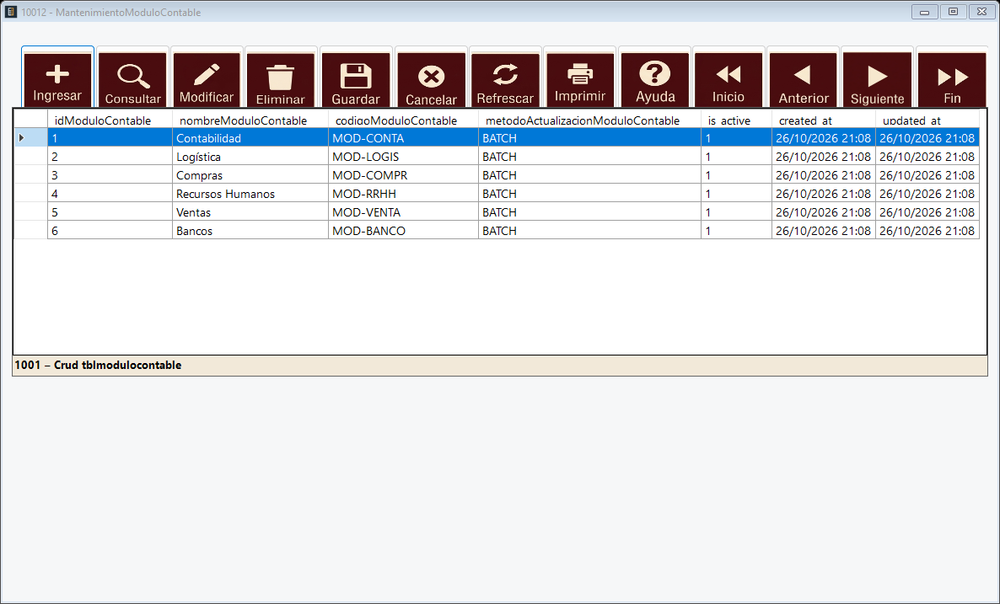

Catálogo de los módulos del ERP que generan pólizas (Compras, Ventas, Bancos, Logística, RRHH y la propia Contabilidad). Indica cómo se actualizan los saldos de las pólizas que envía cada módulo.

Nombre del módulo: nombre del módulo, por ejemplo Compras.
Código: código corto del módulo.
Método de actualización: LINEA aplica los saldos al validar la póliza; BATCH los deja pendientes hasta que se ejecute la actualización de saldos en Pólizas.
Estado: activo o inactivo.
La ventana usa el Navegador del sistema. Los botones que se muestran dependen de los permisos que el perfil del usuario tiene sobre la aplicación 10012.
Ingresar: habilita los campos para registrar un nuevo dato.
Consultar: busca registros con la consulta simple o la compleja.
Modificar: habilita los campos del registro seleccionado para cambiarlos.
Eliminar: quita el registro seleccionado, después de pedir confirmación.
Guardar: graba lo que se ingresó o modificó.
Cancelar: descarta la operación en curso y vuelve a bloquear los campos.
Refrescar: vuelve a cargar la tabla desde la base de datos.
Imprimir: abre el reporte de la tabla.
Ayuda: abre esta página.
Inicio, Anterior, Siguiente y Fin: recorren los registros de la tabla.
1. Presione Ingresar.
2. Llene los campos.
3. Presione Guardar. El sistema confirma que la grabación fue exitosa y el registro aparece en la tabla.
1. Seleccione la fila en la tabla; los campos se llenan con sus datos.
2. Presione Modificar, cambie lo necesario y presione Guardar.
3. Para quitarlo, seleccione la fila, presione Eliminar y confirme.